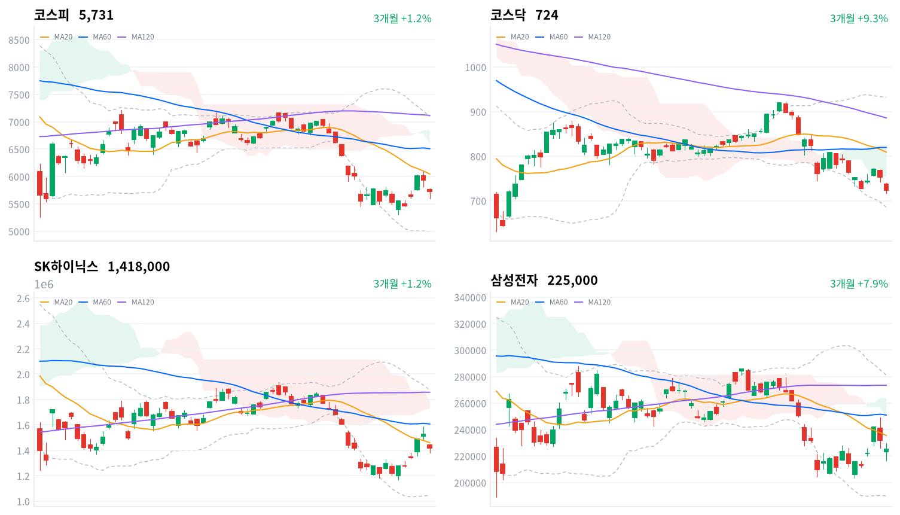

알파벳·아마존의 AI 설비투자 현금흐름 부담과 인텔의 부진한 가이던스가 전해진 다음 날, 외국인 매도가 반도체·전자부품 대형주에 몰리며 매도 사이드카가 발동됐다. 삼성전자·SK하이닉스가 역대 최대 3분기 실적을 확인한 직후였다.
이번 하락은 메모리 수요 전망을 고친 재평가보다 외국인 위험 회피가 만든 심리 충격에 가깝다고 판단한다. 이 판단은 11월 4일 미국 중간선거 개표 뒤 외국인 수급과 11월 6일까지 SK하이닉스의 상대 수익률로 확인한다.
미국 빅테크 실적이 AI 설비투자의 현금흐름 부담을 드러낸 다음 날, 외국인은 코스피에서 1조6,267억원을 순매도했다(당일 잠정). 매도는 반도체와 AI 서버 부품주에 집중됐고, 장중에는 매도 사이드카가 11거래일 만에 발동됐다. 삼성전자·SK하이닉스가 역대 최대 3분기 영업이익을 확인한 바로 다음 세션이다.
장 마감 뒤 보도는 알파벳·아마존의 현금흐름 악화와 인텔의 가이던스 부진이 AI 투자 수익성 우려를 키워 반도체 매도로 번졌다고 설명했다. 하락의 계기에 대한 설명에는 동의한다. 다만 빅테크가 설비투자 계획을 줄였다는 발표는 없었고, 메모리 주문이나 가격 전망을 낮춘 자료도 나오지 않았다. 한국장 동안 미국 나스닥 선물은 0.19% 내리는 데 그쳤는데, 코스피는 아시아 4개 지수 평균보다 2.33%포인트 더 내렸다. 그래서 낙폭의 크기는 수요 전망의 변화보다 한국 반도체에 쏠린 외국인 매도가 만들었다고 본다.
이 판단은 한국 반도체의 실적 근거가 하루 사이 바뀌지 않았다는 데서 출발한다. 시장이 AI 설비투자 증가율 둔화를 메모리 가격 정점 신호로 읽기 시작했을 수도 있다. 대만가권도 2.49% 내렸고 AI 기판·MLCC 업체까지 함께 급락해, 공급망 전체의 재평가 가능성은 남는다. 그래도 수요 쪽 1차 자료가 그대로인 상태에서는 심리 충격을 우선 설명으로 본다. 외국인 매도는 기관과 개인이 받았지만, 업종별 순매매 자료가 없어 매도가 반도체에 얼마나 몰렸는지는 보도와 가격으로만 확인된다. 두 설명은 10월 30일 KRX 종가 대비 11월 6일 KRX 종가 기준 SK하이닉스와 코스피의 수익률 차이로 구분한다.
하루 급락만으로 미국 반도체 업종의 수요 판단을 바꿀 근거는 부족하고, 새로 제안할 상품은 없다. 미국 반도체·AI 하드웨어 업종에 옮겨 읽을 것은 고객사의 현금 부담이 설비투자 계획으로 번지는지이고, 한국 반도체의 낙폭 자체는 외국인 수급의 몫이 크다. 가장 가까운 결정적 일정은 한국 시간 11월 4일 미국 중간선거 개표 뒤 첫 세션의 외국인 코스피 순매수 방향이다. 개표 뒤에도 대규모 순매도가 이어지면 선거 전 경계로는 설명하기 어려워진다.
코스피가 10월 30일 기준 최근 60거래일 저점 5,306 아래에서 마감하면 하루짜리 심리 충격이라는 판단을 철회한다. 10월 저점을 다시 깨는 매도라면 한 번의 실적 충격보다 수요 전망의 재평가가 더 설득력 있는 설명이다. 바로 아래 일목 전환선(5,703)은 종가와 너무 가까워, 그 선을 내주는 것만으로는 판단을 바꾸지 않는다.
출처: 이투데이, MBC, 서울경제, 서울파이낸스, 더나은미래
직전 10월 29일 미국 세션에서는 알파벳 급락이 기술주를 끌어내려 나스닥이 1.38%, S&P500이 0.30%, 다우가 0.25% 내렸다. 오늘 아시아에서는 대만가권(-2.49%)·닛케이(-2.12%)·상해종합(-1.44%)이 내리고 항셍(+1.46%)만 올랐다. 코스피는 네 지수 평균(-1.15%)보다 2.33%포인트 약했다.
코스피는 갭 하락해 5,760에서 출발했다. 한국 정규장 동안 S&P500 선물은 0.17%, 나스닥 선물은 0.19% 내리는 데 그쳐, 장중 낙폭을 키운 것은 미국 선물의 추가 하락이 아니었다.
하루 범위 안에서 코스피는 위쪽 3분의 1, 코스닥은 아래쪽 3분의 1에서 마감했다. 장 후반 반등이 대형주에 먼저 들어오고 중소형주로는 덜 번졌다.
반도체·전자부품 대형주를 외국인 매도가 끌어내리고 기관과 개인이 그 물량을 받은 날이다. 제약과 해운은 올랐고, 한화에어로스페이스와 기아는 각자의 3분기 실적 부진으로 크게 내렸다. 시간외 거래 자료는 없어 장 마감 뒤 흐름은 확인하지 못했다.
코스피는 3.48% 내린 5,731, 코스닥은 3.83% 내린 724.38로 마감했다. 미국 빅테크 실적 충격이 역대 최대 실적을 확인한 반도체 대형주를 덮쳐, 코스피는 20일 이동평균(6,046)보다 5% 넘게 낮아졌다.
| 지수 | 종가 | 등락률 | 시가 | 고가 | 저가 | 전일 종가 |
|---|---|---|---|---|---|---|
| 코스피 | 5,730.74 | -3.48% | 5,760.35 | 5,784.98 | 5,599.42 | 5,937.66 |
| 코스닥 | 724.38 | -3.83% | 737.76 | 739.79 | 717.27 | 753.23 |
장중에 볼 것은 저점 뒤의 회복이다. 코스피는 점심 무렵 5,599까지 밀려 5,600선을 내줬다가 오후에 5,700선 위로 돌아왔고, 한 차례 다시 밀린 뒤 5,700선 위에서 끝났다. 5,600선 아래에서 매수가 들어왔다는 점에서 매도가 마감까지 쌓인 날은 아니었다고 본다. 코스닥은 장중 717까지 내려 최근 20거래일 가운데 가장 낮았고, 종가도 그 근처에 머물렀다.
| 주체 | 순매수(억원) |
|---|---|
| 개인 | +6,213 |
| 외국인 | -16,267 |
| 기관 | +7,498 |
| 주체 | 순매수(억원) |
|---|---|
| 개인 | +1,699 |
| 외국인 | -259 |
| 기관 | -1,390 |
매도 규모가 한꺼번에 커졌고, 기관과 개인이 그 물량을 받았다. 외국인은 코스피에서 1조6,267억원을 순매도했다(전일 1,221억원 순매수, 당일 잠정). 최근 10거래일 가운데 가장 큰 순매도로, 직전 최대였던 10월 23일의 9,811억원을 크게 넘었다. 기관은 7,498억원 순매수(전일 4,132억원 순매도), 개인은 6,213억원 순매수(전일 429억원 순매도)로 둘 다 방향을 바꿨다. 지수가 급락한 날 외국인 매도는 하락과 같은 방향이었고, 국내 투자자의 매수는 낙폭을 줄이는 데 그쳤다.
전일 외국인 값은 오늘 다시 받은 잠정치라 어제 글의 946억원 순매수보다 많은 1,221억원이다. 장 마감 뒤 보도는 오늘 외국인 순매도를 1조6,173억원~1조6,212억원으로 전해, 확정치가 나오면 오늘 값도 달라질 수 있다.
코스닥에서는 외국인 순매도가 259억원(전일 1,210억원 순매도)으로 작았고, 기관이 1,390억원(전일 740억원 순매도)을 순매도했으며 개인만 1,699억원을 순매수했다. 코스피보다 큰 코스닥 낙폭은 외국인보다 기관 매도와 함께 나왔다.
장중 누적 수급과 프로그램 매매는 받을 수 있는 자료가 없어 싣지 않는다.
출처: 비즈워치, 한국경제
| 순위 | 종목/ETF | 구분 | 거래대금 | 비고 |
|---|---|---|---|---|
| 1 | SK하이닉스 | 개별주 | 5.20조원 | - |
| 2 | 삼성전자 | 개별주 | 4.28조원 | - |
| 3 | 반도체 테마 ETF | 테마·롱 | 2.08조원 | 29종 합산 |
| 4 | 삼성전기 | 개별주 | 1.01조원 | - |
| 5 | 삼성전자우 | 개별주 | 0.87조원 | - |
| 6 | KODEX CD금리액티브(합성) | 단기금리·현금성 | 0.59조원 | - |
| 7 | SK스퀘어 | 개별주 | 0.51조원 | - |
| 8 | 삼성SDI | 개별주 | 0.41조원 | - |
| 9 | 에이피알 | 개별주 | 0.31조원 | - |
| 10 | 2차전지 테마 ETF | 테마·롱 | 0.28조원 | 14종 합산 |
단위 백만원 원본을 조 단위로 환산했다. 같은 기초자산 ETF는 방향별로, 같은 테마 섹터 ETF는 테마별로 묶고 지수·해외 ETF는 제외했다.
거래는 이날 가장 많이 내린 반도체 대형주에 몰렸다. SK하이닉스(5.20조원)와 삼성전자(4.28조원)가 1·2위였고, 반도체 테마 ETF 29종 합산(2.08조원)이 3위였다. 삼성전기(1.01조원)와 삼성전자우(0.87조원)가 뒤를 이어 상위 5개가 모두 반도체·AI 부품 쪽이다. 거래대금만으로는 이 돈의 방향을 알 수 없지만, 거래가 몰린 종목의 주가는 모두 크게 내렸다.
2차전지 쪽은 주가가 버텼다. 삼성SDI(0.41조원)는 0.93% 올랐고, 2차전지 테마 ETF 14종 합산(0.28조원)도 표의 마지막 줄에 들었다. 현금성 상품인 KODEX CD금리액티브(합성)(0.59조원)는 6위였고, 표 안에 단일종목 레버리지 상품은 없었다.
하락은 대표 업종 대부분에 번졌고, 반도체가 가장 크게 내렸다. 대표 ETF 기준 12개 섹터 가운데 반도체(-6.49%)·건설(-4.89%)·자동차(-4.60%)·방산(-3.93%) 순으로 낙폭이 컸다. 오른 섹터는 은행(+0.42%)·조선(+0.27%)·헬스케어(+0.23%) 셋뿐이었다. 반도체 섹터는 1주 기준으로 0.78% 내렸고, 1개월 기준으로는 24.37% 낮다.
업종 단위로 오른 곳 대부분은 일부 종목에 기댄 상승이었다. 소프트웨어 업종은 4.93% 올랐지만 74종목 가운데 22종목만 올랐고, 대표 소프트웨어 ETF는 1.44% 내렸다. 제약은 2.10% 올랐으나 174종목 가운데 36종목만 올라 대형주가 업종 지수를 끌었다. 해운사(11종목 중 6종목)와 은행(11종목 중 8종목)은 상승 종목이 절반을 넘었다. 하락 쪽에서는 증권이 2.78% 내렸고 39종목 가운데 4종목만 올랐다.
반도체 대형주가 실적 확인 직후 급락했다(SK하이닉스 -7.08%, 삼성전자 -3.02%, 삼성전자우 -5.33%). 알파벳·아마존의 AI 투자 현금흐름 우려와 인텔의 가이던스 하회가 반도체 대형주 매도로 번졌다는 보도가 나왔다. 매도는 장비·기판주로 이어져 한미반도체(-7.21%)·이수페타시스(-9.07%)·디아이(-10.34%)가 더 크게 내렸고, SK스퀘어도 5.88% 내렸다. 우선주 낙폭이 보통주보다 컸던 개별 원인은 확인되지 않았다.
제약 대형주는 반대로 올랐다(삼성바이오로직스 +8.86%, 한미약품 +6.82%). 삼성바이오로직스는 확인된 단기 호재 공시 없이 대형 바이오주 전반에 매수세가 들어왔다는 분석이 나왔고, 한미약품은 확인된 재료가 없다.
HMM이 올랐다(HMM +4.71%). 운임과 주주환원 기대가 반영됐다는 보도가 있지만 단일 호재는 특정되지 않아, 확인된 재료는 없다.
AI 서버 부품주도 함께 내렸다(삼성전기 -7.5%, 대덕전자 -13.6%, LG이노텍 -6.19%). 삼성전기는 AI 서버용 MLCC·FC-BGA 비중이 커 AI 투자 불확실성에 민감하게 움직였다는 분석이 나왔다. 대덕전자는 최근 일주일 공시나 개별 뉴스 없이 업종과 함께 내렸고, LG이노텍은 확인된 재료가 없다.
방산 대형주가 실적 부진으로 급락했다(한화에어로스페이스 -8.42%, 한화시스템 -6.35%). 한화에어로스페이스는 폴란드향 납품이 4분기로 밀려 3분기 영업이익이 전망치를 크게 밑돌았고, 한화시스템은 그룹 방산 동반 약세 외에 확인된 재료가 없다.
묶음 밖에서는 기아가 11.73% 급락했다. 3분기 영업이익이 컨센서스를 22.9% 밑돈 어닝 쇼크였다. GS건설(-11.56%)·현대건설(-8.53%)·대우건설(-6.02%) 등 건설주도 크게 내렸지만 재료는 확인되지 않았다.
출처: 서울경제, 뉴스핌, 재경일보, 서울신문, 데일리안, 잡포스트, 한국경제
국고채 금리는 주식 급락과 함께 크게 내렸고, 장기물이 더 강했다. 3년물은 5.1bp 내린 3.715%, 10년물은 7.3bp 내린 4.008%로 4%선 바로 위에서 마감했다.
| 지표 | 금리 | 전일比(bp) | 기준일 |
|---|---|---|---|
| 국고채 3년 | 3.715% | -5.1 | 2026-10-30 |
| 국고채 10년 | 4.008% | -7.3 | 2026-10-30 |
| CD 91일 | 3.32% | +3.0 | 2026-10-30 |
| 회사채 AA- 3년 | 4.407% | -4.2 | 2026-10-30 |
| 한국은행 기준금리 | 3.00% | 0.0 | 2026-09 |
한국은행 경제통계시스템(ECOS) 기준. 기준금리는 2026년 9월 기준 값이다.
위험 회피 매수가 장기물에 더 몰리면서 커브는 평평해졌다. 10년물과 3년물의 차이는 29.3bp로 2.2bp 좁아졌고, 위치는 최근 2년(533거래일)의 한가운데쯤이다. 3년물과 기준금리의 차이(71.5bp)도 같은 기간의 한가운데쯤이다.
국고채 강세는 회사채로 고르게 번지지 않았다. 회사채 AA- 3년물은 4.2bp 내렸지만 국고채 3년물보다 덜 내려, 두 금리의 차이는 69.2bp로 0.9bp 넓어졌다. 최근 2년(533거래일) 가운데 이보다 넓었던 날이 34일뿐이다. 주식이 급락한 날 기업의 차입 비용은 국고채만큼 내려가지 않았다. CD 91일물은 3.0bp 올라 국고채와 반대로 움직였다. 원/달러는 외국인의 대규모 주식 순매도에도 장중 고점에서 내려 원화가 강해지는 쪽이었다.
| 미국 참조 지수 | 구분 | 관측 | 등락률 | 업종 내 상승 비율 | 기준일 |
|---|---|---|---|---|---|
| 반도체·AI 하드웨어 | 종목 | SK하이닉스 | -7.08% | – | 10/30 |
| 반도체·AI 하드웨어 | 종목 | 삼성전자 | -3.02% | – | 10/30 |
| 반도체·AI 하드웨어 | 지수 | 대만가권 | -2.49% | – | 10/30 |
| 전력망 | 업종 | 전기제품 | -0.23% | 12% | 10/30 |
| 전력망 | 종목 | HD현대일렉트릭 | -3.63% | – | 10/30 |
| 전력망 | 종목 | LS ELECTRIC | -5.56% | – | 10/30 |
| 전력망 | 종목 | 효성중공업 | -5.34% | – | 10/30 |
| 방산 | 종목 | 한화에어로스페이스 | -8.42% | – | 10/30 |
| 산업재 | 업종 | 조선 | -0.62% | 10% | 10/30 |
| 산업재 | 종목 | HD현대중공업 | +0.74% | – | 10/30 |
| 산업재 | 종목 | 한화오션 | -0.99% | – | 10/30 |
| 산업재 | 종목 | 삼성중공업 | +1.02% | – | 10/30 |
| 금속·광업 | 업종 | 철강 | -1.35% | 26% | 10/30 |
| 금속·광업 | 업종 | 비철금속 | -1.18% | 15% | 10/30 |
| 금속·광업 | 종목 | POSCO홀딩스 | -0.73% | – | 10/30 |
| 금융 | 업종 | 은행 | +0.60% | 73% | 10/30 |
| 금융 | 업종 | 증권 | -2.78% | 10% | 10/30 |
| 금융 | 종목 | KB금융 | -0.83% | – | 10/30 |
| 금융 | 종목 | 신한지주 | +1.24% | – | 10/30 |
| 소프트웨어 | 업종 | 소프트웨어 | +4.93% | 30% | 10/30 |
| 소프트웨어 | 종목 | NAVER | -1.49% | – | 10/30 |
| 에너지 | 종목 | SK이노베이션 | +0.08% | – | 10/30 |
| 일본 | 지수 | 닛케이 | -2.12% | – | 10/30 |
| 중국 | 지수 | 항셍 | +1.46% | – | 10/30 |
| 중국 | 지수 | 상해종합 | -1.44% | – | 10/30 |
원/달러는 한국장 시간대 09:30 고점 1,340원에서 내려 15:30 마지막 관측인 1,334원, 그날의 저점에서 끝났다(서울 외환시장 공식 종가 아님). 외국인이 주식을 크게 판 날에도 원화가 강해져, 해외주식 보유분의 원화 환산 가치는 소폭 줄고 대기 자금으로 달러를 사는 비용은 낮아졌다. 현금 운용의 참고 금리는 CD가 오르고 국고채 3년물이 내려 엇갈렸다.
반도체는 미국 반도체·AI 하드웨어 업종의 단기 가격 흐름에 불리한 관측이다. SK하이닉스와 삼성전자(-3.02%)가 대만가권(-2.49%)보다 크게 내려 같은 우려에 대한 반응이 한국에서 가장 컸다. 다만 메모리 수요를 낮춘 1차 자료는 없어, 이 낙폭을 미국 업종의 수요 판단으로 그대로 옮길 근거는 약하다. 전력망은 AI 데이터센터 전력 투자 기대도 같은 매도를 받았다는 점이 새롭다. HD현대일렉트릭(-3.63%)·LS ELECTRIC(-5.56%)·효성중공업(-5.34%)이 함께 내렸지만, 직전 미국장 반응을 따라간 것인지 전력 설비 수요 판단이 바뀐 것인지는 이 하루로 구분하기 어렵다.
10월 29일 뉴욕에서 알파벳은 3분기 광고 매출이 컨센서스를 밑돌고 잉여현금흐름이 적자를 내 12.64% 급락했다는 보도가 나왔다. 아마존도 대규모 AI 설비투자로 잉여현금흐름 적자가 커졌고, 인텔은 4분기 매출 가이던스가 예상을 밑돌아 시간외에서 급락했다. 빅테크가 설비투자 계획 자체를 줄였다는 발표는 확인되지 않았다.
메모리·기판 업체의 이익이 줄려면 고객사가 현금 부담을 이유로 서버 주문을 줄이는 단계가 먼저 와야 한다. 이날 매도는 그 단계 이전에 나와, 반도체·전자부품의 이익 추정보다 주가 배수가 먼저 깎였다. 다음 확인은 11월 6일 KRX 종가 기준 SK하이닉스의 코스피 대비 수익률이다.
한화에어로스페이스의 3분기 영업이익은 4,520억원으로 전년보다 46% 줄어 시장 전망치를 약 61% 밑돌았고, 매출은 6조943억원으로 6% 줄었다는 보도가 나왔다. 폴란드향 K9 자주포·천무 납품이 4분기로 밀린 것이 핵심이고, 대전 사업장 사고 관련 일회성 비용과 환율도 부담이었다. 다올투자증권은 적정주가를 246만원에서 140만원으로 낮췄고, 신한투자증권(138만원→101만원)과 삼성증권(136만원→100만원)도 목표를 내렸다.
인도가 늦어지면 매출과 이익 인식이 다음 분기로 밀리고, 증권사가 올해 이익 추정을 낮추면서 목표주가가 내려갔다. 수주가 취소된 것은 아니라는 점은 보도에 공통이고, 대부분 매수 의견을 유지했다. DB증권은 4분기에 K9 30문·천무 20문 이상의 인도를 예상했다. 방산 수요의 근거보다 단기 이익의 시점이 흔들린 사례로 본다. 4분기 실적 발표일과 폴란드 인도 진행은 일정 미확정이다.
11월 3일(현지) 미국 중간선거는 하원 435석 전체와 상원 35석을 뽑고, 공화당이 의회 주도권을 지키는지가 쟁점이라는 보도가 나왔다. 하나증권은 선거 뒤 불확실성 해소가 반등 계기가 될 수 있고, 미국 장기금리와 달러 강세가 누그러지면 외국인 수급에 우호적일 수 있다고 봤다. 관세·친환경 정책은 전면 전환이 어렵다는 평가가 함께 나와, 업종별 영향은 엇갈린다.
외국인 비중이 큰 반도체 대형주가 가장 민감하다. 오늘 외국인 매도에 선거 전 경계가 섞였다면, 개표 뒤 매도가 줄어드는지로 드러난다. 개표는 한국 시간 11월 4일이고, 그날 외국인 코스피 순매수 방향이 확인 기준이다. NH투자증권은 다음 주 코스피 예상 범위를 5,700~6,500으로 제시했다.
위성락 국가안보실장은 10월 30일 브리핑에서 호르무즈 해협 청해부대의 강화·확대를 고심하고 있으나 검토가 끝나지 않았다고 밝혔고, 전쟁에는 관여하지 않는다는 원칙을 재확인했다. 파견 확대가 정해지면 원유 수송로 안전에 대한 정부 관여가 늘어, 정유·해운의 운송 위험 평가에 간접적으로 닿는다. 최종 결정 일정은 미확정이다.
3차 상법 개정의 자사주 소각 의무와 자기주식 공시 강화 후속, 배당소득 분리과세는 이날 새 발표가 없었다. 한국은행 기준금리는 3.00%다.
출처: 이투데이, MBC, 서울파이낸스, 서울경제, 공감신문, 뉴스핌, 뉴스웨이, 데일리안, 비즈워치, 뉴시스
10월 28일 급등이 외국인 비중 회복으로 이어지지 않았다는 10월 29일 판단은 유효하다. 철회 기준인 10월 29일 기준 20일 이동평균 6,102 위에서 마감하지 못했고, 코스피는 그 선보다 6% 넘게 낮은 곳에서 끝났다. 기다린 두 조건도 모두 나왔다. 10월 29·30일 외국인 코스피 순매수 합계(당일 잠정)는 0 미만이었고, 10월 28일 KRX 종가 대비 삼성전자의 상대 수익률도 미리 정한 기준보다 낮았다.
이벤트 대기가 아니라 한국 비중 축소의 연장이라는 외국인 매도 판단(10월 26일)은 미리 정한 기준에 따라 뒷받침됐고, 이것으로 닫는다. 10월 29일과 30일 두 세션 외국인 코스피 순매수 합계(당일 잠정)는 1조5,046억원 순매도로 기준인 0 미만을 크게 밑돌았다. 10월 29일 값은 946억원에서 1,221억원으로 다시 집계됐다. FOMC와 삼성전자 확정 실적이 지난 뒤에도 매수가 이어지지 않아 관망 해석은 약해졌다. 그러나 30일 매도는 미국 빅테크 실적에 집중돼, 구조적인 비중 축소인지 새 사건에 대한 반응인지는 이 자료로 구분하기 어렵다. 방향은 뒷받침됐고, 매도의 이유는 판단을 보류한 채 닫는다.
삼성전자 급등이 환원 기대를 미리 산 것이라는 판단(10월 28일)도 뒷받침됐고, 닫는다. 10월 28일 KRX 종가 대비 10월 30일 KRX 종가 기준 삼성전자는 7.02% 내려 코스피(-4.69%)보다 2.34%포인트 약했고, 기준인 2%포인트 초과 열위를 넘었다. 열위 대부분은 구체적 환원을 1월 이사회로 미룬 10월 29일에 났고, 30일에는 삼성전자가 코스피보다 덜 내려 차이가 일부 줄었다. 기준을 넘은 폭이 0.34%포인트로 작다는 점은 함께 적는다.
두산에너빌리티 하락이 체코 시공 악재에 주기기 공급까지 묶어 판 과잉 반응이라는 판단(10월 29일)은 판단을 보류한 채 이어 간다. 10월 29일 KRX 종가 대비 두산에너빌리티(-3.35%)와 코스피의 하락폭이 비슷해 차이는 +0.13%포인트로 ±3%포인트 안이다. 체코 협상 관련 새 보도는 확인되지 않았고, 판정은 11월 5일 KRX 종가로 한다.
반도체 급락이 메모리 수요 전망의 재평가보다 미국발 심리 충격이라는 판단은 오늘 세웠다. 출발점은 10월 30일 KRX 종가 SK하이닉스 141만8,000원, 코스피 5,731이다. 10월 30일 KRX 종가 대비 11월 6일 KRX 종가 기준 SK하이닉스 수익률이 코스피 수익률보다 3%포인트 넘게 높으면 심리 충격 해석을 뒷받침하고, 3%포인트 넘게 낮으면 수요 전망 재평가를 우선 설명으로 보고 이 판단을 철회하며, 차이가 ±3%포인트 안이면 판단을 보류한다. 이 기준은 두 자산의 변동성 차이를 보정하지 않았다.
| 항목 | 계산 | 결과 |
|---|---|---|
| 외국인 코스피 순매수 합계(당일 잠정) | 10월 29일 +1,221억원 + 10월 30일 −16,267억원 | −15,046억원 |
| 삼성전자(10월 28일→30일 종가) | 225,000 ÷ 242,000 − 1 | −7.02% |
| 코스피(10월 28일→30일 종가) | 5,730.74 ÷ 6,012.44 − 1 | −4.69% |
| 삼성전자 − 코스피 | −7.02% − (−4.69%) | −2.34%포인트 |
| 두산에너빌리티(10월 29일→30일 종가) | 54,800 ÷ 56,700 − 1 | −3.35% |
| 코스피(10월 29일→30일 종가) | 5,730.74 ÷ 5,937.66 − 1 | −3.48% |
| 두산에너빌리티 − 코스피 | −3.35% − (−3.48%) | +0.13%포인트 |
| 시점 | 확인할 것 | 가르는 판단 |
|---|---|---|
| 11월 4일(한국 시간) | 중간선거 개표 뒤 외국인 코스피 순매수 | 외국인 매도에 선거 경계가 섞였는가 |
| 11월 5일 종가 | 두산에너빌리티−코스피 수익률 차(10월 29일 대비) | 체코 결렬 과잉 반응인가, 원전 기대 재평가인가 |
| 11월 6일 종가 | SK하이닉스−코스피 수익률 차(10월 30일 대비) | 심리 충격인가, 메모리 수요 전망 재평가인가 |
| 일정 미확정 | 빅테크의 AI 설비투자 계획 수정 발표 | 고객사 현금 부담이 주문으로 번지는가 |
| 일정 미확정 | 한화에어로스페이스 폴란드 인도·4분기 실적 | 이익 시점 이연인가, 수요 약화인가 |
| 일정 미확정 | 정부의 청해부대 강화 최종 결정 | 호르무즈 운송 위험 평가 |

코스피·코스닥·SK하이닉스·삼성전자 3개월 일봉에 이동평균(20·60·120)·볼린저밴드·일목균형표 구름대를 겹쳐 그렸다. 상승 캔들은 녹색, 하락 캔들은 적색이다.
| 자산 | 위치(이평·구름) | 가까운 저항 | 가까운 지지 |
|---|---|---|---|
| 코스피 | 세 이동평균·구름 아래(역배열) | 20일선 6,046 → 기준선 6,239 | 전환선 5,703 → 60일 저점 5,306 |
| 코스닥 | 세 이동평균·구름 아래(역배열) | 구름 하단 755 → 전환선 762 | 60일 저점 705 → 볼린저 하단 686 |
| SK하이닉스 | 20일선·구름 아래(역배열) | 20일선 146만원 → 기준선 155만원 | 전환선 138만원 |
| 삼성전자 | 전환선·구름 아래(역배열) | 전환선 22만6천원 → 20일선 23만6천원 | 20일 저점 20만4천원 |
코스피는 세 이동평균과 구름 아래 역배열에 있고, 종가가 전환선(5,703) 바로 위다. 전환선을 내주면 60일 저점(5,306)까지 가까운 지지가 없고, 위로는 20일선(6,046)을 되찾아야 하락 추세가 멈췄다고 볼 수 있다. SK하이닉스는 이날 20일선(146만원) 아래로 내려가 전환선(138만원)이 가장 가까운 지지다.
위 레벨은 이동평균·볼린저밴드·일목균형표와 스윙 고저를 기계적으로 계산한 값이며 투자 권유가 아니다.
오늘 요약할 뉴스는 빅테크 AI 투자 우려로 급락한 코스피과 반도체 실적, 기아 실적 부진, 미국 중간선거, 일본은행 동결과 호르무즈 해협에 모였다.
나인앤컴퍼니, M&A 전후로 현금지출 '쑥'…주담대 채권만기 '째깍'머니투데이 · 10월 30일
나인앤컴퍼니가 지난 6월 싱가포르 사모펀드 CCG인베스트먼트에 인수되기 전후로 금전대여, 옥외광고 영업권 선급금, 비상장기업 투자에 대규모 자금을 집행했다. 이 중 A대표에게 빌려준 250억원은 회사가 메리츠증권에서 빌린 돈을 그대로 넘긴 것으로, A대표 주식을 담보로 받았지만 해당 주식이 메리츠증권에 먼저 담보로 잡혀 있어 담보 확보가 늦어지고 있다. 회사는 메리츠증권의 설정이 해지되면 근질권을 설정할 방침이나 해지 시점은 정해지지 않았다. 대여금 만기는 12월15일로, 그 전에 메리츠증권 차입금을 갚아야 담보권을 확보할 수 있다. 주가 하락으로 담보가치도 줄고 있다. 이사회 8명 중 2명은 반대표를 던졌다. 상반기 매출은 224억원으로 1억원 늘었지만 영업이익은 27억원으로 9억원 줄었고, 당기순이익은 금융상품 처분 효과여서 본업 성과로 보기 어렵다는 지적이다. 회사 측은 법리 검토와 반기 감사를 거쳐 질권이 명확하다며 우려할 게 없다고 밝혔다.
AI발 매도 폭풍에 코스피 3% 급락...다음주 美 중간선거 주목비즈워치 · 10월 30일
코스피가 30일 전장 대비 206.92포인트(3.48%) 하락한 5730.74에 마감했다. 미국 빅테크의 AI 투자 부담이 발단이었다. 29일 뉴욕증시에서 알파벳이 12.64% 폭락했고 나스닥은 1.38% 내렸다. 알파벳과 아마존은 AI 매출이 늘었지만 대규모 설비투자로 3분기 잉여현금흐름이 각각 90억6000만달러, 334억5000만달러 적자를 기록했다. 장중에는 5599.42까지 밀려 매도 사이드카가 발동됐고, 이는 지난 15일 이후 11거래일 만이다. 외국인은 1조6173억원을 팔았고 SK하이닉스는 7.08% 급락했다. 다음 주에는 11월 3일 미국 중간선거가 변수로 꼽힌다. 민주당이 의회 다수당을 차지하면 트럼프 행정부의 입법과 예산 추진이 제약받을 수 있다는 분석이다. NH투자증권은 다음 주 코스피 예상 범위를 5700~6500으로 제시했다.
호실적에도 AI 쇼크로 흔들린 코스피…4분기도 삼전·하닉에 기댄다서울경제 · 10월 30일
코스피는 30일 전 거래일보다 3.48% 급락한 5730.74에 마감했다. 간밤 아마존·인텔의 실적 발표 뒤 AI 투자 수익성 우려가 번지며 매도 사이드카가 발동됐다. 삼성전자와 SK하이닉스는 3분기 영업이익 107조 4405억 원, 83조 3338억 원으로 역대 최대를 냈지만 주가는 각각 3.02%, 7.08% 하락했다. 기아는 3분기 영업이익이 시장 전망치를 22.9% 밑돌아 11.73% 급락했다. 3분기 실적을 낸 76개사 중 42개사가 기대에 못 미쳤고, 삼성전자와 SK하이닉스를 뺀 합산 이익은 전망치를 밑돌았다. 코스피 188개사의 4분기 영업이익 전망 합계 중 73.4%를 두 반도체 기업이 차지해 이익 개선이 반도체에 쏠려 있다. 투자자 예탁금은 88조 원대로 줄었고, 증시 회복은 빅테크 투자 여력과 다른 주력 업종으로의 이익 개선 확산에 달렸다는 평가다.
美 빅테크 어닝쇼크…코스피 '불똥'한국경제 · 10월 30일
미국 빅테크의 실적 부진과 현금흐름 악화가 확인되면서 30일 코스피지수는 3.5% 내린 5730.74에 마감했다. 알파벳은 3분기 광고 매출이 컨센서스를 밑돌고 잉여현금흐름(FCF) 적자가 90억달러를 넘어 주가가 13% 폭락했다. 아마존도 FCF 적자가 424억달러로 전 분기의 5.5배로 불어나 시간외에서 7.3% 밀렸다. 인텔은 PC용 반도체 매출 감소와 부진한 4분기 전망이 겹쳤다. 미국 4대 빅테크가 올해 AI 설비투자에 7400억달러를 쏟아붓는 가운데 본업 현금창출력이 약해지자 AI 투자 사이클 지속성에 대한 의구심이 커졌다는 분석이다. 외국인은 유가증권시장에서 1조6212억원을 순매도했다. 미국 중간선거를 앞둔 경계감까지 겹치며 닛케이225지수와 대만 자취안지수도 떨어졌다.
코스닥 성장주 골라 담고 옵션으로 월분배…석 달 수익률 23% [ETF 줌인]서울경제 · 10월 30일
코스닥 성장주를 선별 투자하고 위클리 옵션 매도로 매월 분배 재원을 마련하는 'RISE 코스닥커버드콜액티브'가 주목받고 있다. KB자산운용이 올해 7월 내놓은 이 ETF는 최근 3개월 수익률 23.29%를 기록했으며, 9월 한 달간 10.76% 올라 같은 기간 0.94% 상승한 코스닥150을 앞질렀다. AI 반도체 소재·부품·장비 기업에 비중을 두고, 반도체 장비·소재·테스트·기판 관련 10개 종목에 전체의 약 56%를 실었다. 바이오와 2차전지 대형주가 많은 코스닥150과 차별화된 구성이다. 지수 정기변경과 달리 시장 흐름에 따라 종목과 비중을 바꿀 수 있다. 분배금은 코스닥150 위클리 콜옵션 매도 프리미엄 등으로 마련하며, 상장 후 세 차례 지급했고 총보수는 연 0.30%다. 다만 주가가 급등하면 콜옵션 매도로 상승 수익의 일부가 제한될 수 있다. 매매차익과 옵션 프리미엄은 비과세 대상이어서, 이를 재원으로 한 분배금은 금융소득종합과세 기준인 연 2000만 원에 합산되지 않는다.
기아, 3분기 최대 매출에도 영업이익 '쇼크'한국경제 · 10월 30일
기아는 올해 3분기 매출 31조5974억원으로 역대 3분기 최대를 기록했지만 영업이익은 1조8183억원에 그쳐 증권사 컨센서스를 22.9% 밑돌았다. 이 여파로 30일 주가는 11.73% 급락한 9만5600원에 마감했다. 글로벌 도매와 소매 판매량은 각각 7.9%, 6.9% 늘었고 미국 하이브리드차 판매는 118% 급증했다. 다만 전기차 판매장려금과 가격 인하 확대로 영업이익이 7270억원 줄었고, 원자재 가격 상승과 중동 분쟁에 따른 판매 차질로 5700억원이 더 감소했다. 현대차도 시장 기대를 웃도는 이익을 냈으나 주가가 하락했고, 증권사 22곳 중 13곳이 목표주가를 낮췄다. 4분기 판매가 회복돼도 가격 경쟁과 원화 강세로 수익성 개선은 쉽지 않다는 전망이다. 시장의 관심은 외형 성장에서 이익의 지속성으로 옮겨가고 있으며, 현대차그룹은 로보틱스 등 피지컬 AI의 성장성과 수익성을 입증해야 주가 반등을 기대할 수 있다는 분석이다.
삼성전자, 부활의 세 가지 시그널…반도체 왕좌 되찾을까?한국경제TV · 10월 30일
삼성전자가 2026년 3분기 연결 기준 매출 195.3조 원, 영업이익 107.4조 원으로 역대 최대 실적을 냈다. 영업이익은 전년 같은 기간보다 783%, 전 분기 대비 20% 늘었으며, 이 중 반도체(DS) 부문이 106.5조 원을 차지했다. 반면 DX 부문은 0.8조 원 영업손실로 2분기 연속 적자였다. 기사는 이 반등을 이끌 동력으로 HBM4, 파운드리, AI 패키지 기판을 꼽는다. HBM4는 3분기 판매를 대폭 늘렸고 내년 HBM4E 양산 계획도 내놓았다는 점에서, 엔비디아 공급망 안착 여부가 SK하이닉스에 밀린 주도권 회복의 관건으로 제시된다. 파운드리는 HBM 베이스 다이 매출과 첨단 공정 판매 증가로 개선됐다는 회사 설명이 있으나 구체적 수치는 공개되지 않았다. AI 패키지 기판은 맞춤형 AI 반도체 수요와 연결되지만 실제 대형 고객사 수주로 이어져야 의미가 있다고 짚었다. 다만 실적의 대부분이 메모리 호황에 기댄 만큼 가격 흐름이 바뀌면 이익도 빠르게 바뀔 수 있다는 점이 함께 제기됐다.
통화정책 '축' 바뀐 日…우에다 BOJ 총재 "이젠 2% 물가 방어가 중요"(종합)이데일리 · 10월 30일
일본은행(BOJ)은 30일 금융정책결정회의에서 정책금리를 1.25%로 동결했다. 우에다 카즈오 총재는 회견에서 일시적 요인을 뺀 기조적 물가가 2% 목표와 대체로 부합하는 수준이 됐다고 처음 판단했다. 2013년 1월 목표 도입 이후 13년 만이다. 그는 지난달 인상의 영향을 더 확인할 필요가 있어 동결했으나 금융 환경은 여전히 완화적이라며 금리를 계속 올리겠다고 밝혔다. 다카타 하지메 위원은 금리를 1.5%로 올리자며 유일하게 반대했는데, 물가 판단은 총재와 같고 인상 시점만 달라 시장은 12월 추가 인상 가능성을 높게 본다. BOJ는 ETF 연간 매각 규모도 장부가 기준 약 3300억엔에서 8600억엔으로 늘리기로 전원 찬성으로 의결했으며, 내년 1월부터 적용한다.
호주 총리, 내달 방중 전망…APEC 참석 후 베이징 이동뉴시스 · 10월 30일
앨버니지 호주 총리가 11월 18~19일 중국 선전에서 열리는 APEC 정상회의에 참석한 뒤 베이징을 방문할 예정이라고 SCMP가 복수의 소식통을 인용해 30일 보도했다. 이번이 2022년 취임 이후 세 번째 방중이며, 지난해 7월 이후 약 1년 4개월 만이다. 다만 구체적인 일정과 시진핑 국가주석과의 정상회담 개최 여부는 아직 확인되지 않았다. 양국은 2020년 호주의 코로나19 기원 국제조사 요구 이후 관계가 급격히 나빠져 중국이 호주산 석탄, 보리, 와인 등에 무역 제한 조치를 부과했다. 2022년 앨버니지 정부 출범 뒤 관계 개선에 나섰고, 중국은 2024년 말까지 대부분의 제한 조치를 철회했다. 그러나 남중국해 군용기 근접 비행 공방과 중국 해군의 활동 범위 확대 등 안보 분야 갈등은 이어지고 있다.
올해 우크라 경제, 러 공습 확대에 역성장 전망…개전 후 4년 만에 처음뉴스1 · 10월 30일
우크라이나 중앙은행은 러시아의 항만 봉쇄와 생산시설 공격이 확대되면서 올해 국내총생산(GDP)이 0.4% 감소할 것이라고 전망했다. 지난 7월 전망치 1.8% 성장에서 2.2%포인트 낮춘 수치로, 2022년 개전 첫해 이후 4년 만에 처음 마이너스 성장이다. 철강 생산시설이 피해를 입어 곳곳에서 생산이 멈췄고, 흑해 곡물 수출길이 막히면서 농가 수익성도 악화할 것으로 보인다. 연료 위기까지 겹쳐 9월 물가상승률은 10%를 기록했고, 연말 물가상승률은 12.5%로 3년 만의 최고치가 될 전망이다. 중앙은행은 이에 기준금리를 16%에서 16.5%로 0.5%포인트 올렸으며, 이는 2023년 10월 이후 가장 높은 수준이다. 한편 중앙은행은 2027~28년 완만한 회복과 내년 성장률 0.4%를 제시했다. 내년에는 협력국의 직접 예산 지원 520억 달러와 EU 대출 프로그램을 통한 국방 지원 370억 달러가 들어올 것으로 예상되지만, 재정적자는 약 1조 7000억 흐리우냐에 달할 전망이다.
위성락 "호르무즈 청해부대 강화·확대 고심…국민 보호·경제 이익 위해 역할 모색"뉴시스 · 10월 30일
위성락 청와대 국가안보실장은 30일 청와대 춘추관 브리핑에서 호르무즈 해협의 자유 통항과 안정에 기여하기 위해 청해부대를 강화·확대하는 방안을 고심 중이나 검토가 최종 완료되지는 않았다고 밝혔다. 그는 국제사회와 긴밀히 소통하며 국민 보호와 경제 이익 수호에 필요한 역할을 모색해 왔다고 설명했다. 아울러 어떠한 경우에도 전쟁에는 관여·개입하지 않는다는 원칙을 재확인하고, 상선 보호와 원유 수송 확보, 국민의 생명·안전 보호를 위한 최소한의 활동과 국제적 기여를 이어간다는 기조를 강조했다. 위 실장은 영국, 프랑스, 일본 등이 호르무즈 상황 이전부터 호송과 안전 항해 지원을 위해 구축함과 초계기를 파견해 왔고, 상황 발생 후에는 함정과 항공기를 추가로 전개하고 있다고 전했다. 정부는 이를 감안해 필요한 최소한의 역할을 찾고 있으며, 구체 방안이 수립되면 국민과 국회에 투명하게 설명하겠다고 덧붙였다.